Kunwei force sensor progress report
Kunwei is no longer just a bring-up task: the TCP raw logging path has a stable 19 h 15 min run, Step2C has completed a closed-loop straight-line contact task, Step4D has completed the first full contact circle, and Step4E v11 has run the paper-style outer-loop line path to full progress. The OnRobot/Kunwei comparison in this deck uses existing logs only, with first-value software zero inside each selected window.
1 kHz TCP logging is stable for the current bench
The 19 h 15 min no-motion run received converted Kunwei frames continuously over TCP. This validates the current Ubuntu collection path, but it is not a 24 h run and it is not a device-side zero/tare calibration.
Step2C final holds ~490 Hz measured echo and improves force tracking
The selected final run keeps measured stage25 echo cadence at 489.83 Hz while reducing Fz error MAE from V4's 1.87 N to 1.39 N. RTDE logging stays near 500 Hz and Kunwei raw stage25 remains near 1007.59 Hz. This is measured URScript echo/motion-gate evidence, not a claim about the internal servo loop.
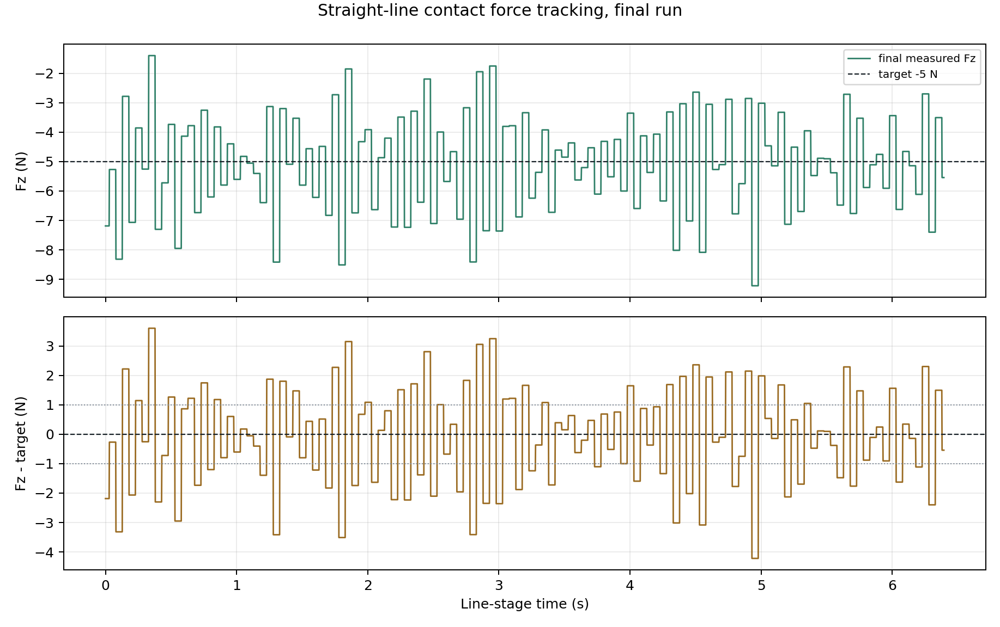
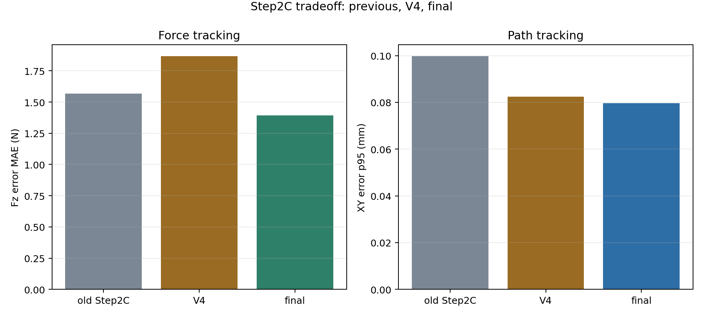
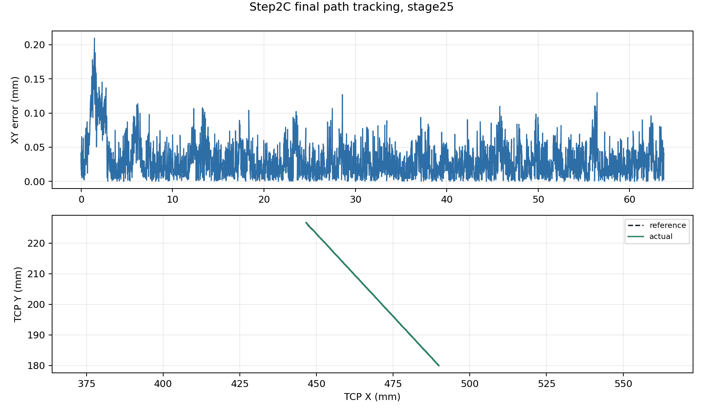
Step4D completes a full contact circle with attitude admittance
Step4D uses the middle half of the prior contact path as the circle diameter, then runs deterministic contact search, signed-Fz velocity admittance, and bounded wx/wy attitude admittance while UR handles IK through Cartesian speedl twist. The selected run reached circle_complete with 99.875 mm arc progress, 0.828 mm closure error, and 0.111 mm radial p95. This is circular-contact scaffold evidence, not a same-task ranking against Step2C straight-line force quality.
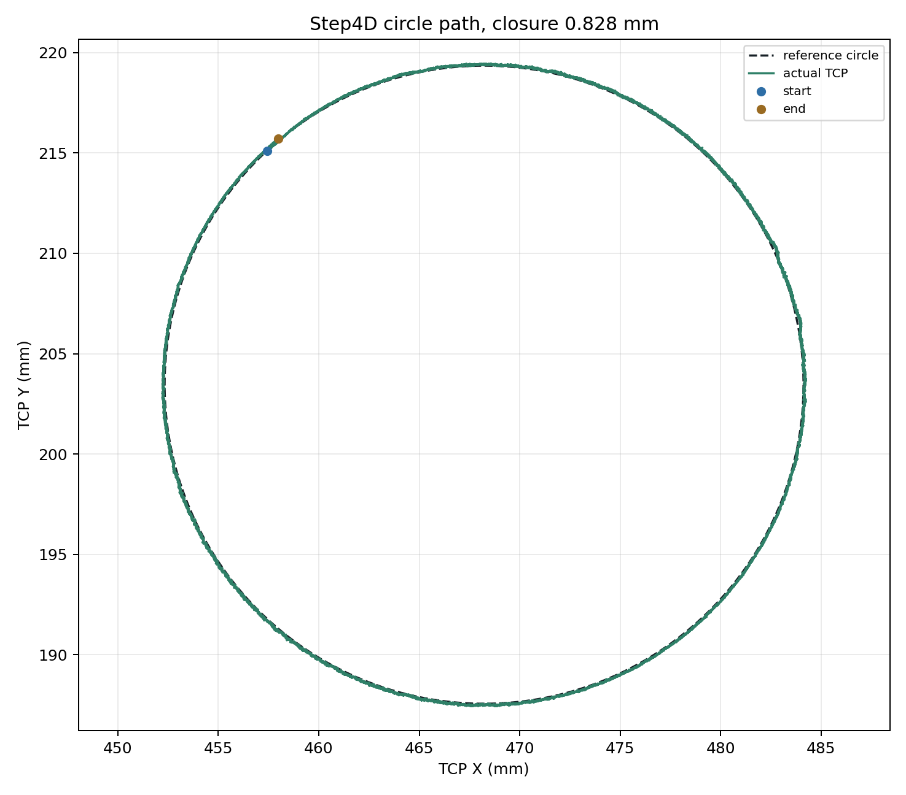
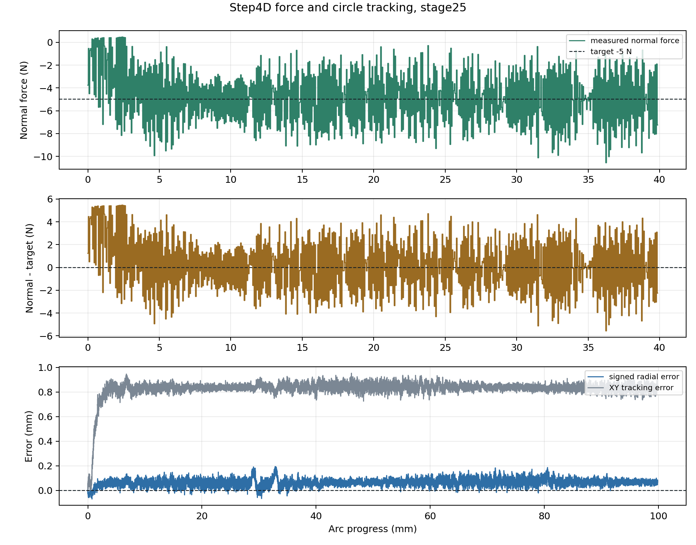
Step4E v11 runs the outer-loop line to full path progress
Step4E is the paper-style reproduction step: Python computes Cartesian outer-loop commands from Kunwei wrench and RTDE TCP pose, while URScript consumes the registers and lets UR handle IK through speedl. The selected v11 run reached 143.747 mm progress, matching the bridge path length, with 2.190 mm XY path-error p95. The remaining finish issue is small and specific: the URScript clean-complete threshold is 0.0044 mm higher than the bridge clamp, so the line ended by runtime timeout rather than completion reason 1.0.
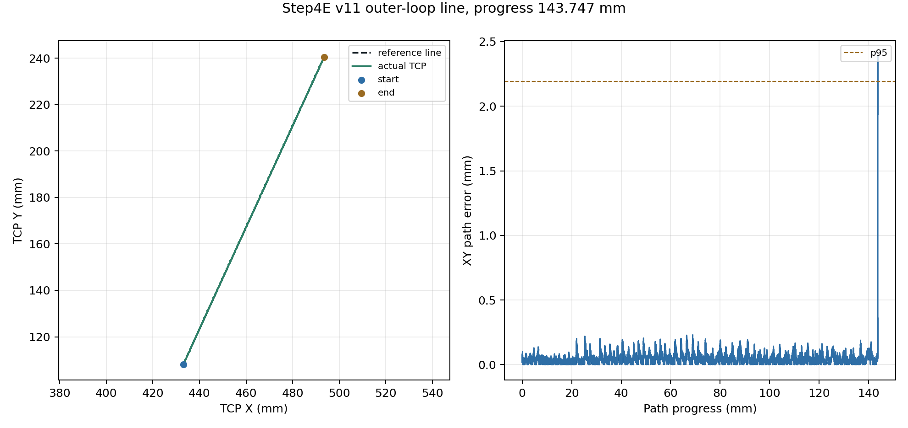
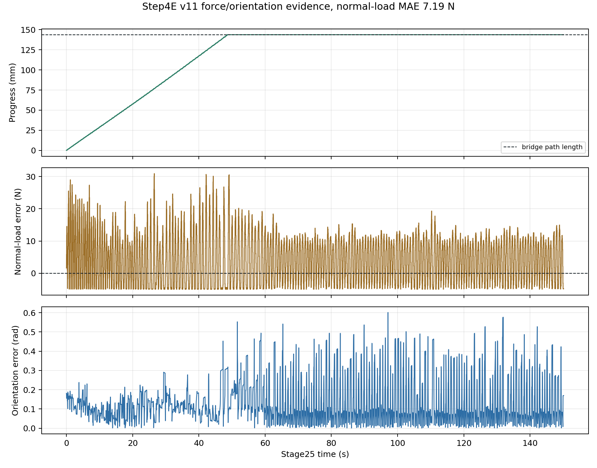
OnRobot vs Kunwei, first 600 s
Both traces are first-value software zeroed inside their own 600 s windows. No device-side zero/tare was executed for this report version. The shaded region is a min/max envelope; statistics use all samples in the selected window.
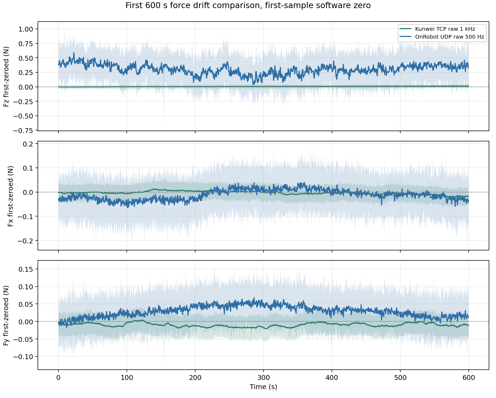
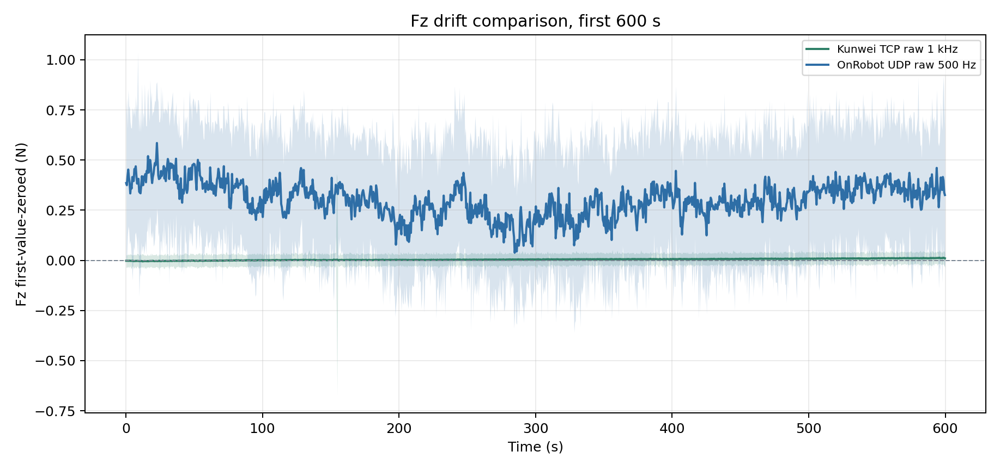
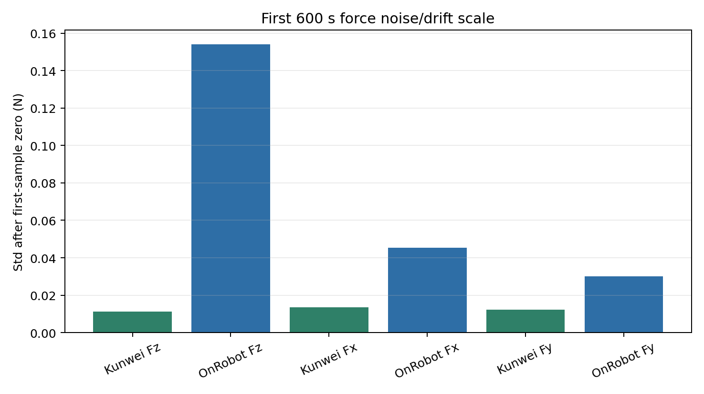
OnRobot vs Kunwei, 6 h
The local common maximum is 8.79 h, limited by the OnRobot UDP run. This deck uses 6.00 h as the main long-window comparison so the result stays readable and avoids overfitting the meeting story to a tail segment.
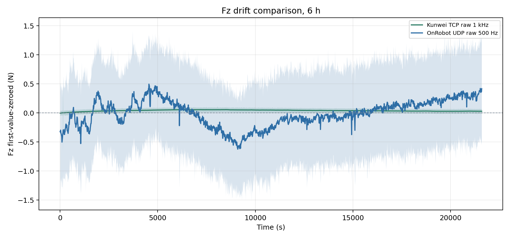
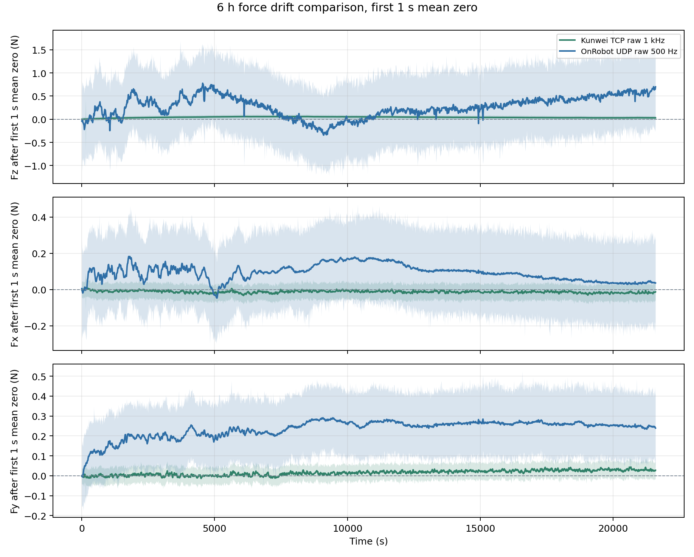
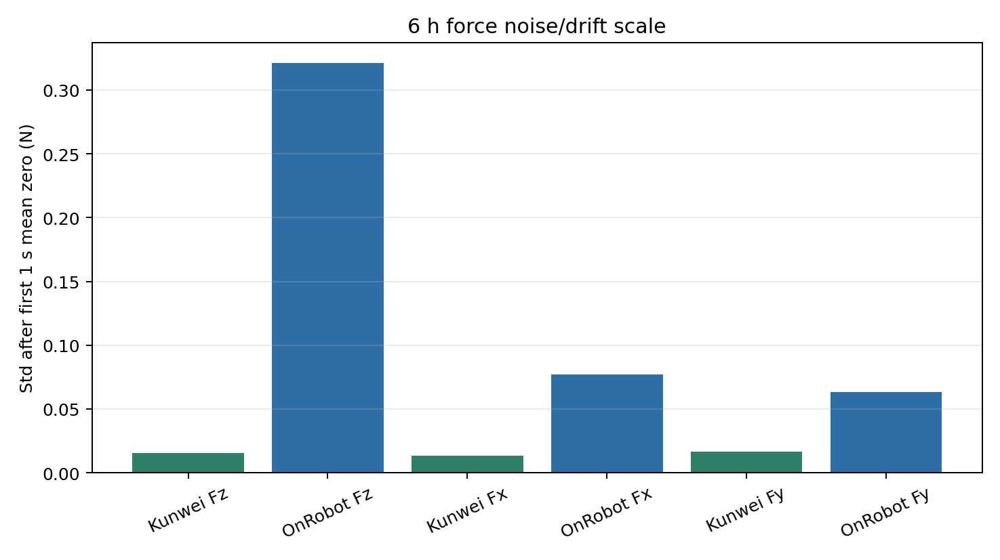
Stabilize contact entry before chasing higher frequency
The next Step2C work should confirm repeatability and reduce contact-entry transient after the final-run improvement. The report should keep frequency layers separate: sensor raw stream, bridge/RTDE logging, measured URScript echo cadence, and unvalidated internal servo-loop behavior.
| Decision | Current evidence | Default next move |
|---|---|---|
| Logging route | Kunwei TCP raw is stable at 1 kHz class | Use it as the default Kunwei collector |
| Force control | Final mean Fz is near target and error MAE is 1.39 N | Confirm repeatability before broader force-quality claims |
| Circle contact | Step4D completed the full circle with 0.828 mm closure error | Reduce contact-entry transient and normal-force ripple before stronger algorithm claims |
| Outer-loop line | Step4E v11 reached 143.747 mm full-path progress, then timed out on a 0.0044 mm threshold mismatch | Clean up finish logic before treating it as a polished demo |
| Frequency claim | Final stage25 echo is 489.83 Hz; RTDE logging is 507.53 Hz | Report measured cadence, not internal servo-loop frequency |
| A/B comparison | Existing 600 s and 6 h windows differ in setup/date/load | Use first-value software zero for this report; reserve same-fixture testing only for future absolute calibration claims |